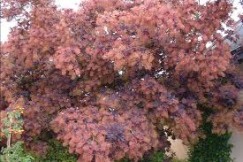

Arbre à perruques

Arbre à perruques (Cotinus coggyeria de la famille des Anacardiaceae)
Toxique pour le Korat.
Partie toxique pour les chats en général et le Korat en particulier :
Toute la plante.
Symptômes du processus pathologique :
Salivation, diarrhée, vomissements, urine contenant du sang, respiration difficile, difficulté à déglutir.